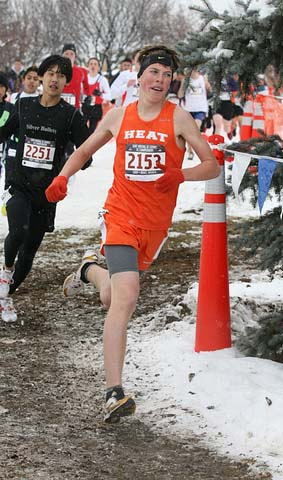

Pleasanton Heat
2009 National Junior Olympic XC Youth Boy's Champion Team

Pleasanton Heat's Connor McCarthy clocked 14:09 to place 10th among 242 runners in the 4,000-meter race, and to help lead the Pleasanton Heat to a team victory.
by Bob Burns
Link to Photos and Finish Times
Their runners were rested and ready for the 2009 USATF National Junior Olympic Cross Country Championships. In the final hours of preparation, the burden shifted to the shoulders of Pleasanton Heat coaches Kevin McCarthy and Eric Petersen.
They had to fill out the lineup card. In designating their “A” team for the national event in Reno, they had to choose eight runners from a group of 10 evenly matched runners.
“Deciding the top eight was a tough choice,” McCarthy said.
The problem was compounded when it came to Connor McCarthy, Kevin’s son and one of the top runners on the team. Connor was Pleasanton’s ninth finisher two weeks earlier at the Region 16 qualifying race for the Junior Olympics. Connor’s father didn’t want to be seen as playing favorites.
“You’ve got to be kidding,” Petersen told McCarthy. “Connor’s got to be on the ‘A’ team.”
The coaches got it right, judging from Pleasanton’s decisive victory in the Boys Youth Division (ages 13 and 14) at the Junior Olympics. The Heat scored 60 points to finish 49 points ahead of the second-place Equalizers on Dec. 12 at Reno’s Rancho San Rafael Regional Park.
Connor McCarthy was Pleasanton’s top finisher, clocking 14:09 to place 10th among 242 runners in the 4,000-meter race. Caton Avilla, the team’s sixth man at regionals, was the second Pleasanton runner across the finish line at nationals, finishing 17th overall.
Rounding out Pleasanton’s top five scorers were Aidan Goltra (21st place), Gabe Arias-Sheridan (27th) and Nolan Petersen (38th). Pleasanton’s “B” team finished 12th in the team standings.
“It was really gratifying to win because these boys have worked so hard,” Kevin McCarthy said. “We knew we had a good group coming back, but it takes a little bit of luck to win.”
The Heat is a perennial power in Junior Olympic competition, comprised mainly of runners from Pleasanton and Fremont with an occasional Central Valley athlete mixed in. At the 2008 National Junior Olympics Cross Country Championships in Virginia, the Heat placed second in the Youth Boys race. Connor McCarthy and Peterson were scoring members of that team, and two other Pleasanton runners, Goltra and Brynn Sargent, earned medals at the 2009 Junior Olympic Track & Field Championships.
“Six or seven of the boys on this team have been running together for four or five years now,” Petersen said. “They’ve shown a lot of patience to get to this point, because kids get good in different spurts. A lot of our guys are late bloomers. These kids didn’t start out as all-stars.”
The Heat’s “A” and “B” teams finished first and second at the Region 16 qualifying meet on Nov. 29 over the same Reno course that would be used for nationals. But the conditions couldn’t have been more different. The balmy conditions for the regional meet gave way to a full-blown snowstorm for the main event.
“I was really nervous about the conditions going in,” Kevin McCarthy said. “Bad weather adds a variable that you can’t predict. But it turned out to be an advantage because of our depth.”
Connor McCarthy took Petersen’s advice to go out slower than he did at regionals, and the Amador Valley High School freshman ran a solid tactical race to finish 10th.
“I felt ready,” Connor McCarthy said. “I knew it was my time to step up and help my team.”
Avilla, a freshman at Elk Grove’s Pleasant Valley High School, had also run a sub-par race at regionals. Avilla slipped and fell in the early stages of the national race but kept his composure, working his way through the pack to crack the top 20 and earn All-America honors.
“It was an amazing experience,” Avilla said. “My high school coach made a big deal of our win, spreading the news all over the school. I’m grateful for the opportunity to run on this team.”
Pleasanton placed 10 runners in the top 70 finishers at the national championships. Jacob Schlachte, running on the “B” team, finished 43rd, followed by heat teammates Sargent (45th), Tim O’Shea (60th), Adler Faulkner (67th) and Sean Aylward (70th).
“Our top 10 were very similar in ability and their order changed race to race,” Kevin McCarthy said. “The finishing order of the boys will change, but the team result stays constant.”
Avila is a relative newcomer, in just his second season with the Heat, but his mother, Jerrie, marveled at the team’s cohesiveness.
“I don’t know where Coach McCarthy and Petersen found these kids, but they were all so supportive of one another. It was really neat to see.”